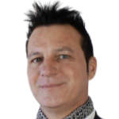

Michela Amadio
Michela Amadio
The mission of Private Community® and the Elevate to Admiration® Formula are the driving forces behind my experience as a Franchisee. Before that first meeting with the founders of Private Community®, I was very focused on the training aspect, with the added burden of having to follow up with each participant individually because there wasn't a solid group of other entrepreneurs around them in the Community to support each other in making the significant strides necessary to achieve their Vision. This, of course, created a greater load and strain for me, not only in terms of actual work but also mentally.
From that first meeting with the founders of Private Community®, we consolidated the first community in Treviso, where the atmosphere is serene and active. The members are in constant contact, motivating and supporting each other, keeping each other on track towards their desired progress, and providing quality feedback. This allows me to focus on building the team of collaborators.
Being a Franchisee centered around communities gives greater freedom to Franchisees because it empowers the members and allows us to leverage a solidly based know-how that simplifies the fruition of the courses.
Moreover, the positive atmosphere being created around the community and us as Franchisees is bringing us expansion opportunities for building new entrepreneurial communities.
 Federico Giacomuzzi
Private Community® is an organization born from the extensive experience and decades of know-how of all its members.
As a franchisee, I immediately accepted the challenge: to quickly create a new entrepreneurial organization that is strong, innovative, fast, high-performing, effective, and efficient.
The entire team—no great challenge is faced alone—has worked tremendously well on developing the mindset and all the materials, including the information system. The cohesive group, also thanks to the in-person National meetings, grows together, bringing new ideas and challenges; the continuous interaction among us is always stimulating.
Paolo Girardo
My experience with Private Community®? It started with the desire to help those entrepreneurs, professionals, and managers who believe in a better world and want to achieve it in an empowering and collaborative environment. Self-improvement has always been at the core of my life experience, and I believe that having a clear vision of who you want by your side to achieve your projects is crucial for their realization.
Working together towards a common goal unleashes individual energies that you often don't believe you have. For me, Private Community® is primarily a place to reflect on your dreams and find those people, aligned in values and vision, with whom you can realize great projects to make a difference in the revival of our country... thanks to people who have common interests, an open mindset, but experiences in completely different fields.
Marco Franceschini
Contributing to self-realization and quality of life through our work has been the mission I've wanted to pursue for over 20 years in the field of human resources, focusing on personal growth and mutual support.
Many people feel the need for a winning culture and strong entrepreneurial skills, but who is capable of guiding you towards this desire?
I have personally experienced all this in Private Community®, and over the years, we have helped dozens of people achieve it. Thanks to our Communities, we are no longer alone in facing our challenges!
Marina Gambera
Helping people grow, emerge, and providing them with the right tools to achieve their desires and dreams... freeing them from the slavery of daily routines where they only focus on urgencies and very little on what truly matters for the growth and development of their business in line with their Vision!
This is my personal Mission in Private Community®, which allows me to support entrepreneurs and professionals who want to scale their business while contributing to the well-being of the surrounding community!
I have experienced it myself in Private Community® for my own business, and I decided to help others live the same experience! Over the years, we have created communities of entrepreneurs and professionals based on mutual support and assistance!
There is still much to be done across the entire Italian territory, and we are ready to do it!!!
Alessandro Occhiena & Claudia Piolatto
Before entering the franchising world, we were looking for an opportunity that would allow us not only to grow professionally but also to make a significant contribution to others. We dreamed of a business that would enable us to scale, expand our entrepreneurial skills, and share the opportunities we had received. However, despite our determination, we felt limited by the available options, which often lacked a long-term vision or a solid business model. What immediately struck us when we had the opportunity to consider purchasing the franchise was the potential to scale within the organization, transitioning from simple members to franchisees. The serious business model, with high-value materials, combined with the freedom of action based on solid foundations, resonated deeply with our values. The real distinguishing element was our admiration for the franchisors: inspiring, trustworthy individuals with solid experience in franchising business models. Their vision and commitment made it clear that the model was perfectly scalable, not just for us, but also for other members of our team. Today, just a few months later, our predominant feeling is one of deep gratitude and satisfaction. The results we are seeing in our community are living testimonies of the positive impact of our work. The value we have managed to bring into the lives of the people we have involved is immense, reflected in the fulfillment and gratitude they express. Our team, guided by common values and mutual admiration, is forming solidly, and the business is beginning to flourish. This experience is reinforcing our belief that joining this franchise was not only the right choice for us but also a catalyst for positive change for all those who have decided to embark on this journey with us.
CONTACTS FOR INFORMATION